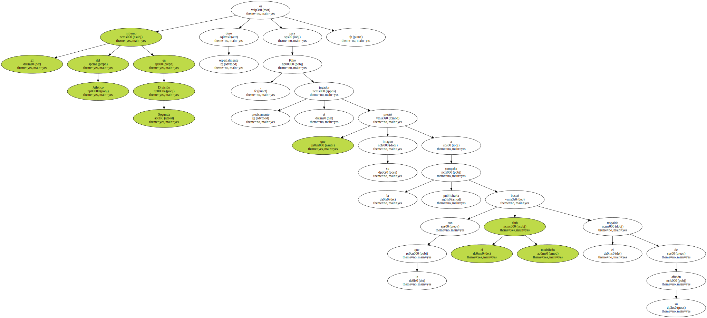
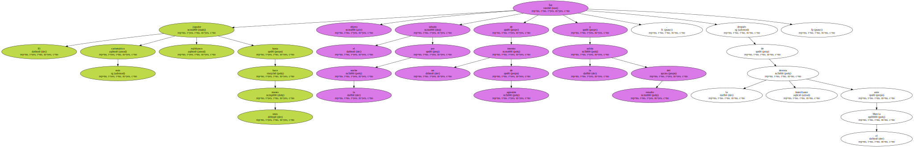
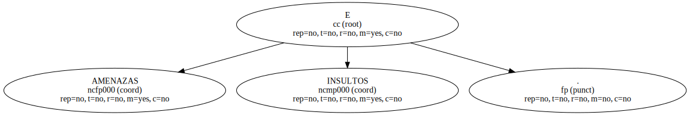
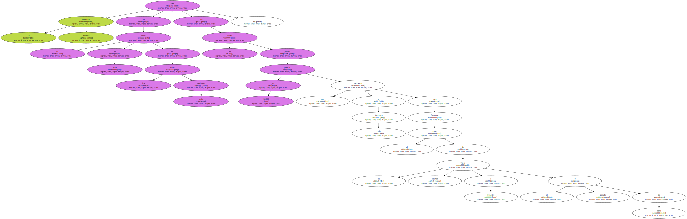
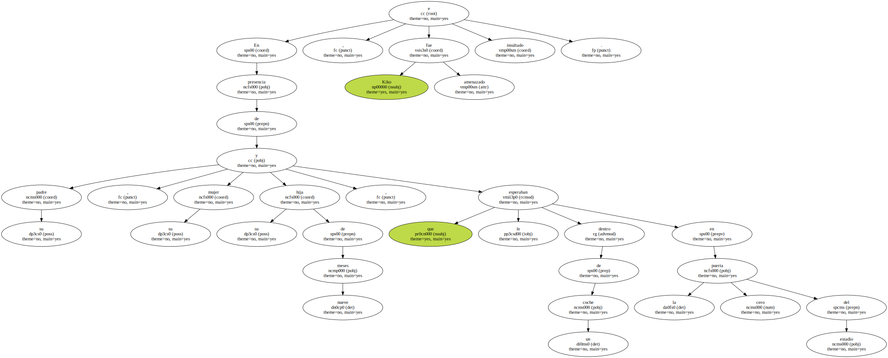
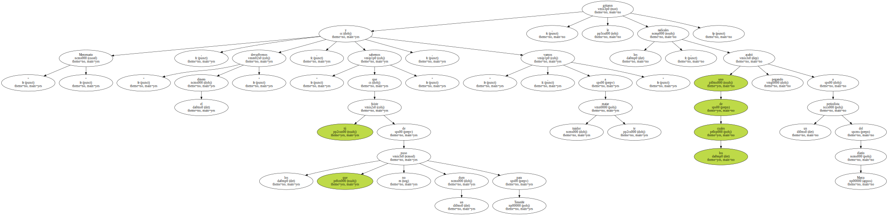
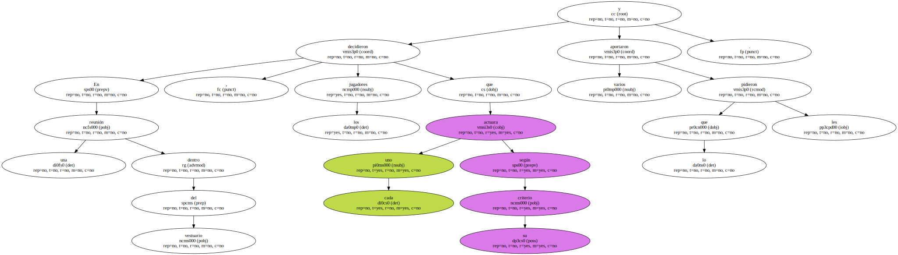
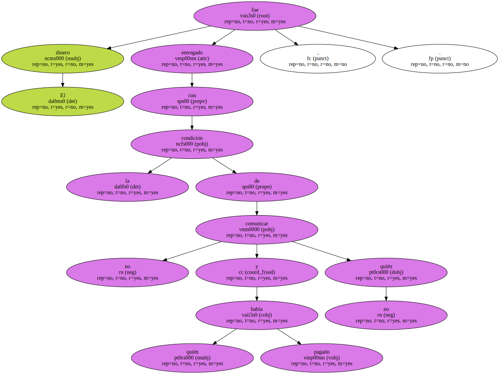
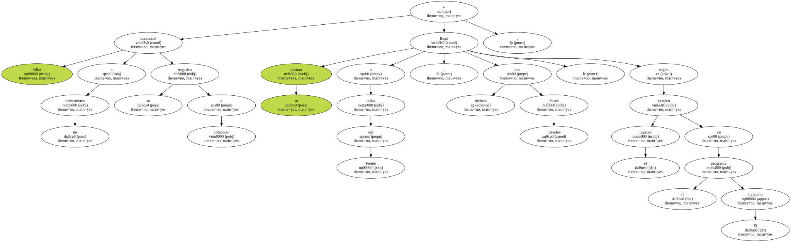
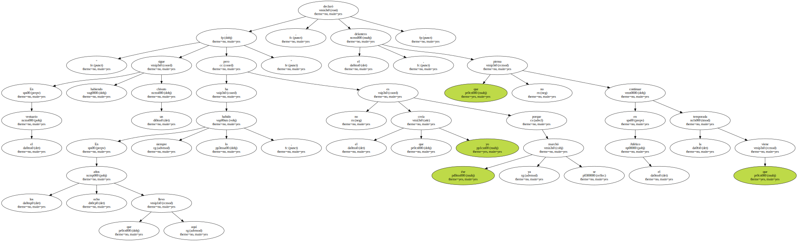

El infierno del Atlético en Segunda División es especialmente duro para Kiko , precisamente el jugador que prestó su imagen a la campaña publicitaria con la que el club madrileño buscó el respaldo de su afición.
El más carismático jugador rojiblanco hasta hace unos meses fue objeto el sábado por la noche de un intento de agresión a la salida del estadio , después de la humillante derrota ante el Murcia.
Un grupo de los más radicales miembros del Frente Atlético le acusó de ser el principal responsable del descenso y le reprochó con suma dureza no colaborar económicamente con la peña para sufragar sus desplazamientos.

AMENAZAS E INSULTOS.
El delantero jerezano está en el punto de mira de los ultras más exaltados por no haber puesto las 150.000 pesetas que exigieron a cada futbolista para financiar el coste de un vuelo charter a Tenerife el pasado 8 de abril.
En presencia de su padre , su mujer y su hija de nueve meses , que le esperaban dentro de un coche en la puerta cero del estadio , Kiko fue amenazado e insultado.
" Mercenario " , " devuélvenos el dinero " , " sabemos que tú fuiste de los que no puso un duro para Tenerife " , y " traidor , te vamos a matar " , le gritaron los radicales , uno de los cuales acabó pegando a un periodista del diario Marca.
En una reunión dentro del vestuario , los jugadores decidieron que cada uno actuara según su criterio y varios aportaron lo que les pidieron.
El dinero fue entregado , con la condición de no comunicar quién había pagado y quién no.
Kiko comunicó a sus compañeros su negativa a colaborar y su postura llegó a oídos del Frente , incluso con frases literales , según explicó el jugador en el programa El Larguero.
" En el vestuario sigue habiendo un chivato . En los ocho años que llevo aquí siempre lo ha habido , pero no es el que yo creía porque ése ya se marchó " , declaró el delantero , que no piensa continuar en el Atlético la temporada que viene.
